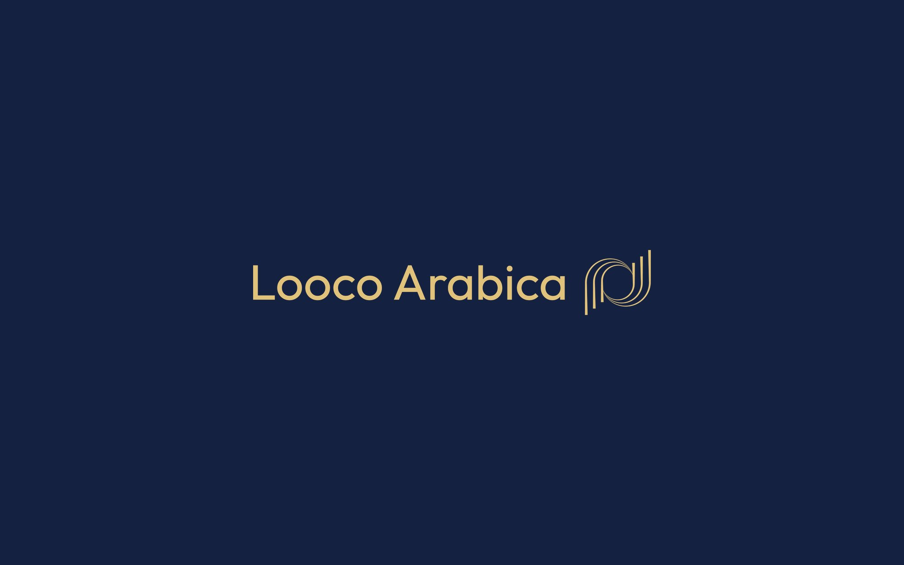
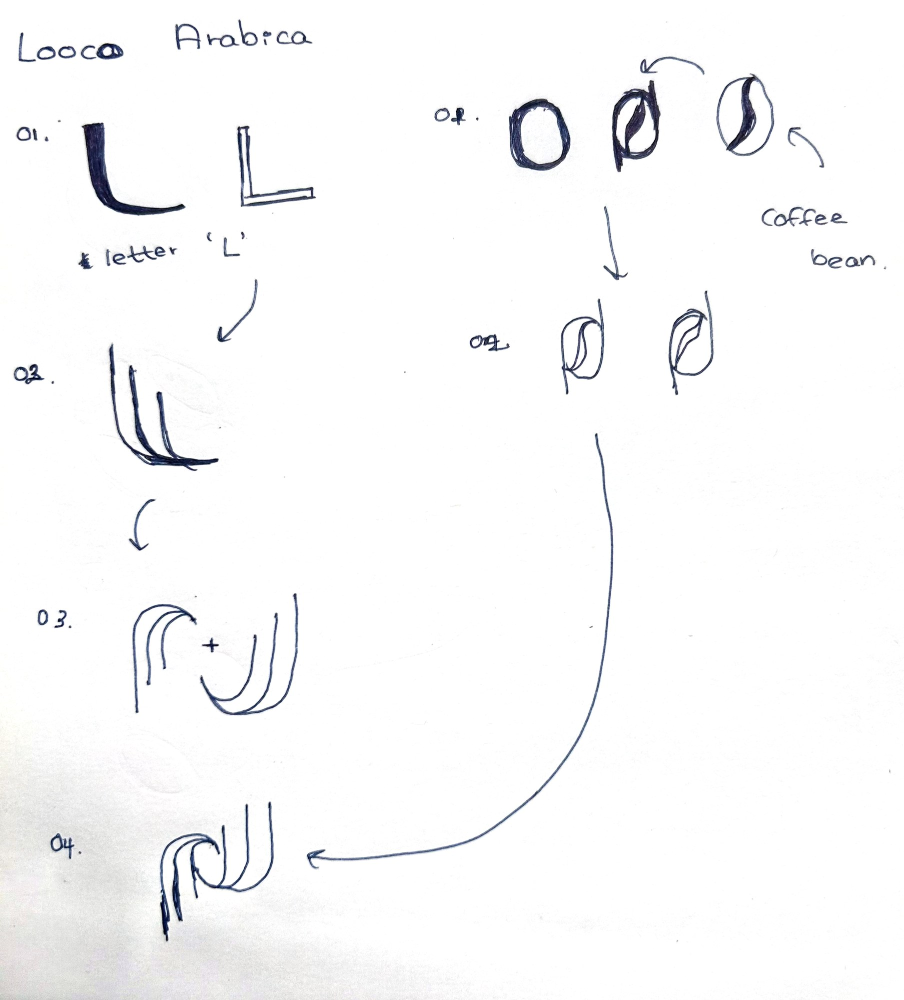

Case file · Brand identity
Looco Arabica
Arabian coffee, crafted for today. A warm, refined identity for a modern café.

- Project
- Brand identity and guidelines
- Client
- Looco Arabica, modern Arabian café (concept brand)
- Tools
- Adobe Illustrator, Adobe Photoshop
- Year
- 2026
01The brief
Looco Arabica is a modern café inspired by the Arabian tradition of coffee and hospitality. Every cup starts with carefully roasted Arabica beans, served in a calm, welcoming space where people slow down, meet and talk. The brand needed to feel rooted in heritage but fresh and modern.
02The idea
Layered arches that form an L: the doorways of Arabian architecture, and lines that rise like steam from a cup. Deep navy for evenings over coffee, and desert gold that carries warmth like golden crema.
03Sketches
